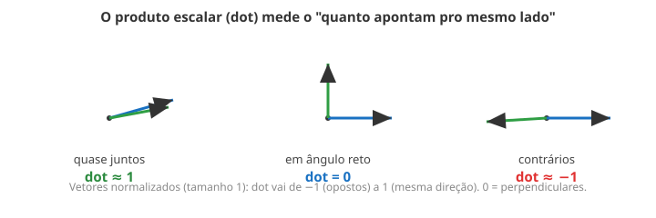

← Mapa do curso · Marco 2 · Módulo 8 de 11
Este é um módulo-ferramenta. Antes de acender uma luz num objeto 3D (próximos módulos), você precisa de duas ideias da matemática que aparecem em todo shader de luz: o vetor e o produto escalar. A boa notícia: dá pra ver as duas na tela. Nada de decoreba.
Um ponto é um lugar (onde você está). Um vetor é uma seta: tem direção e tamanho (pra onde ir, e quanto). No M7 a posição de cada vértice era um ponto. Agora vamos pensar em direções — setas.
length(v_uv - vec2(0.5)) media? E aquela subtração
v_uv - vec2(0.5) — que "coisa" geométrica ela era?
length media o tamanho dela. Você usava vetores sem saber o nome.
Muitas vezes só importa a direção da seta, não o tamanho. normalize(v)
pega qualquer seta e devolve uma de tamanho 1 apontando pro mesmo lado. É como dizer "pra lá",
esquecendo "quão longe".
dot): o medidor de alinhamentodot(a, b) pega dois vetores e devolve um número que diz o
quanto eles apontam pro mesmo lado:

dot = 1 (mesma direção), 0 (perpendiculares), −1 (opostos).dot chega perto de 1. Apontando em ângulo reto, nada em comum (0). Apontando
uma contra a outra, opostas (−1). É exatamente assim que a luz vai "saber" se uma superfície está
virada pra ela — no Módulo 10.
Cada pixel calcula a direção dele a partir do centro (uma seta normalizada) e
faz o dot com uma direção que você controla pelo slider. O número do
dot vira o brilho do pixel:
Gire o slider e veja o "holofote" girar.
Sem mexer ainda — preveja: quando o slider aponta pra direita, qual metade da tela fica branca: a direita ou a esquerda? E o que tem bem no meio do lobo claro?
Resposta: ____________________
Agora gire o slider e confira.
dot?dot — e aí ele mediria tamanho junto com direção, não só o
alinhamento que a gente quer.dot dá ângulo?dot. Antes de chegar lá, arrisque: você
acha que a face fica clara quando o dot (entre a direção dela e a luz) é
alto ou baixo? Guarde sua aposta.dot devolve um número, não um vetor. E pode ser negativo
(até −1). Quando isso virar brilho de luz, a gente corta o negativo com max(..., 0.0) —
mas isso é assunto do M10. Por aqui, deixe o negativo aparecer (ele vira preto).
normalize deixa a seta com tamanho 1 (só a direção importa).dot(a,b) mede alinhamento: 1 (juntos), 0 (perpendiculares), −1 (opostos).dot vai decidir a luz no M10.O shader abaixo já calcula a direção de cada pixel (a seta normalizada
dir). Sua missão: faça o brilho ser o dot dessa direção com a direção
horizontal pra direita, vec2(1.0, 0.0). Detalhe: o dot
vai de −1 a 1, mas a cor do pixel vai de 0 a 1; o * 0.5 + 0.5 reencaixa um no outro.
O resultado é um holofote apontando pra direita. Edite, dê Test Drive e clique
Conferir.
Ligue cada termo ao seu significado (escreva a letra):